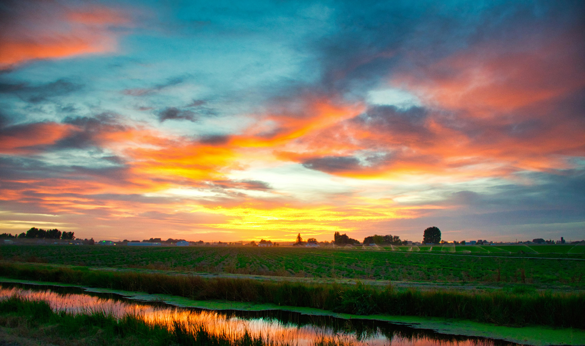
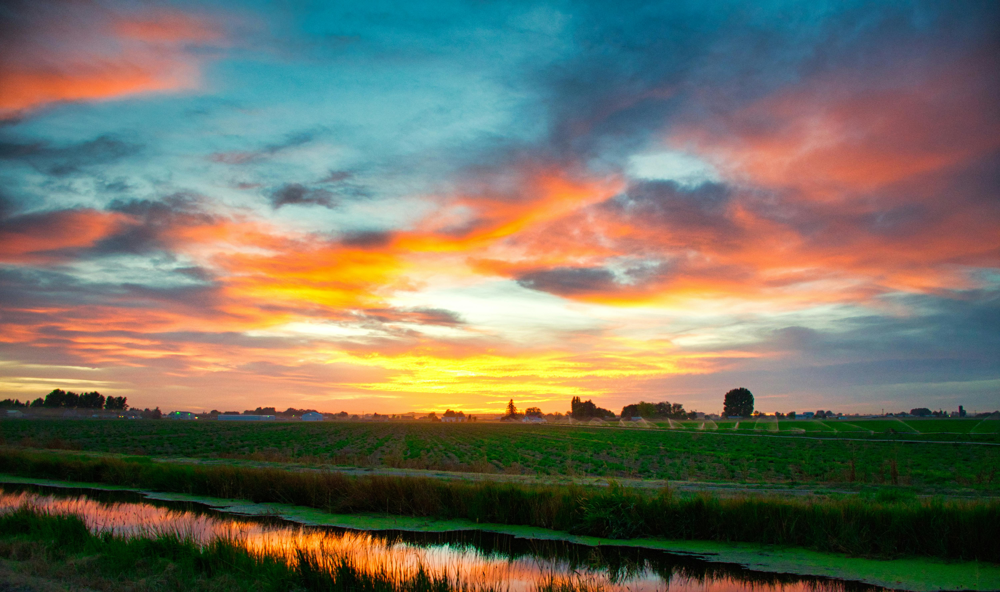
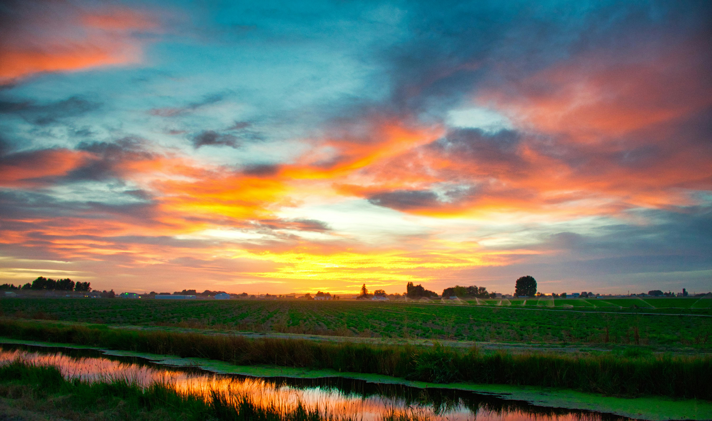

About CropSet
Empowering Farmers. Enabling Buyers. Ensuring Growth.


 

Empowering Farmers. Enabling Buyers. Ensuring Growth.

At CropSet, we aim to revolutionize the agriculture ecosystem by connecting farmers and buyers through transparent, secure, and profitable contract farming. Our goal is to ensure stable market access for farmers and consistent quality produce for buyers.
Farmers often face unpredictable markets, unfair pricing, and delayed payments. Buyers struggle to source reliable produce consistently. CropSet bridges this gap with a digital platform that simplifies contracting, communication, and payment tracking.
Buyer and Farmer roles with toggle-based login & authentication.
Create and manage farming contracts easily with full transparency.
Track advances and final payments with timely updates.
Accessible across all devices for seamless experience.
Frontend Developer
Backend Developer
We envision CropSet expanding across regions, offering predictive analytics, AI-powered crop monitoring, and financial insights for all users – with regional language support for inclusivity.